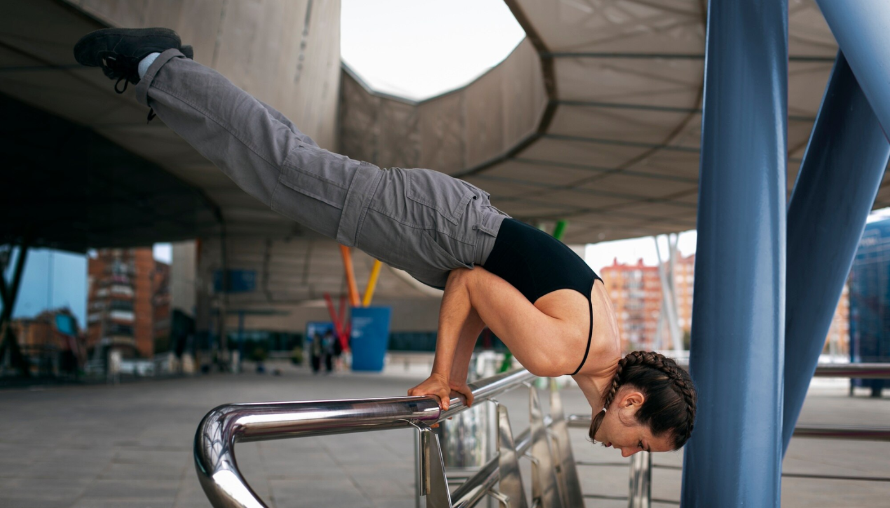
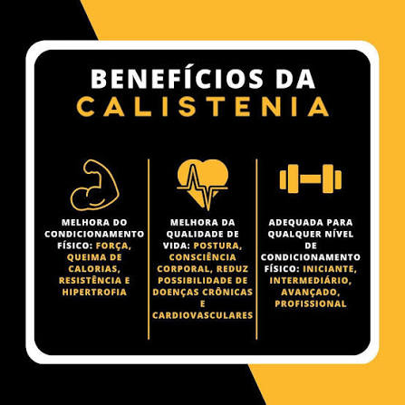
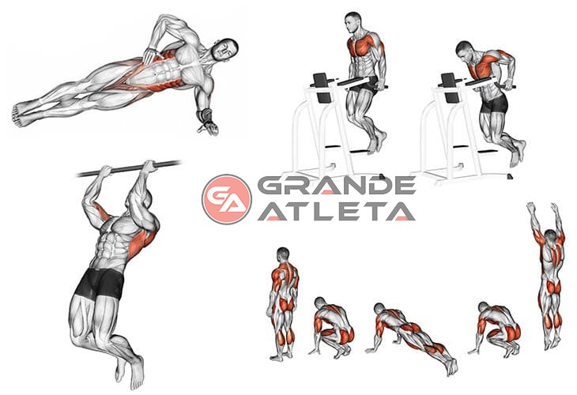

O que é calistenia?

A calistenia é uma forma de exercício físico que utiliza o peso do próprio corpo para desenvolver força, flexibilidade e resistência. Pode ser praticada em qualquer lugar sem necessidade de equipamentos.

A calistenia é uma forma de exercício físico que utiliza o peso do próprio corpo para desenvolver força, flexibilidade e resistência. Pode ser praticada em qualquer lugar sem necessidade de equipamentos.

Melhora a força muscular, resistência, coordenação e flexibilidade. Pode ser adaptada para todos os níveis.
